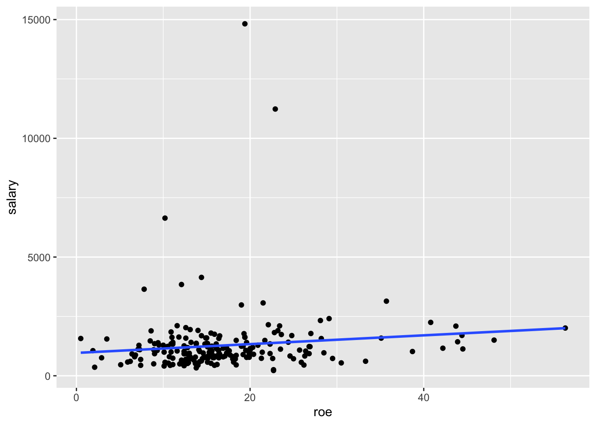
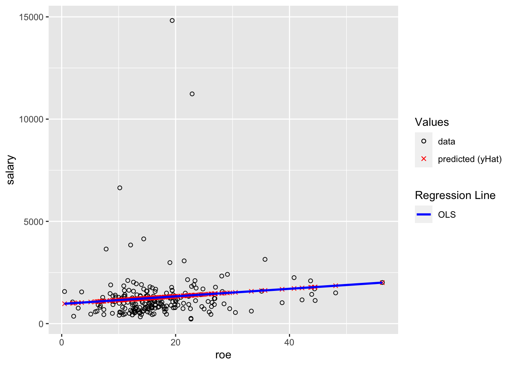

13 Ch 2 - SLR
In the second part of your book you will have chapters for main topics we cover. For each, you will replicate empirical examples from the textbook. The second-level headings (i.e., those with 2 hash tags that show up in the navigation bar of the html files) in each file are labeled with the examples you should replicate. The data is loaded for you using the the wooldridge package (the wooldridge package has datasets from Wooldridge Introductory Economics 6th edition). I also suggest that you add notes on each chapter, but doing so is optional (except if I specify that notes are required).
For this chapter, you should do the simple linear regressions from the examples. For each, you should make sure you get the same results as in the example and understand the discussion of the example in the textbook. For this chapter, you should also use ggplot to create a scatter plot of the x and y variables used in the regression, and include a linear regression line. So I suggest doing this chapter after you complete the DataCamp course and your notes on Intro to Data Visualization with ggplot2.
These are the packages you will need:
For displaying the results of a single regression, you should use the pander package as shown in example 2.3 below. (Later in 380 you will be comparing several regression models side-by-side and will be using the stargazer package instead, but for a single regression model this works well).
I completed the first example (Example 2.3: CEO Salary and Return on Equity) for you to demonstrate what you need to do. For the subsequent examples you should fill in the code yourself. I’ve provided the template for you and included the code to load the data. I then added a comment that says “YOUR CODE GOES HERE” wherever you are supposed to add code. You should use the example I did for you as a guide. What you do later in 380 will not be as simple as copy/pasting code I give you and changing a few variable names, for for this chapter as you’re first learning what to do, it’s exactly that easy. Don’t overthink what you’re being asked to do.
That said, you are of course welcome to add more if it will help you. You can add more regressions. You can explore the changes of units I talk about in LN2.7. You can experiment with log transformations shown in the later parts of chapter 2 (we’ll talk about these later with chapter 3). But the only things you’re required to do for the BP are the 2 examples I left for you below.
13.1 Notes
Optionally, you can add notes here on chapter 2’s (and LN2’s) content.
13.2 Example 2.3: CEO Salary and Return on Equity
Load the data from wooldridge package, estimate the regression, and display the results
# Load data
data(ceosal1)
# Estimate regression model
ex2.3 <- lm(salary ~ roe, data=ceosal1)
# Display model results
pander(summary(ex2.3))| Estimate | Std. Error | t value | Pr(>|t|) | |
|---|---|---|---|---|
| (Intercept) | 963.2 | 213.2 | 4.517 | 1.053e-05 |
| roe | 18.5 | 11.12 | 1.663 | 0.09777 |
| Observations | Residual Std. Error | \(R^2\) | Adjusted \(R^2\) |
|---|---|---|---|
| 209 | 1367 | 0.01319 | 0.008421 |
Display a scatter plot with regression line corresponding to this model
## `geom_smooth()` using formula 'y ~ x'
13.3 Example 2.4: Wage and Education
Load the data from wooldridge package, estimate the regression, and display the results
# Load data
data(wage1)
# Estimate regression model
# YOUR CODE GOES HERE
# Display model results
# YOUR CODE GOES HEREDisplay a scatter plot with regression line corresponding to this model
13.4 Example 2.5: Voting Outcomes and Campaign Expenditures
Load the data from wooldridge package, estimate the regression, and display the results
# Load data
data(vote1)
# Estimate regression model
# YOUR CODE GOES HERE
# Display model results
# YOUR CODE GOES HEREDisplay a scatter plot with regression line corresponding to this model
13.5 Example of Fitted Values (\(\hat{y}\))
This example builds off of Example 2.3: CEO Salary and Return on Equity above. You don’t need to do anything for these, but you should look at them to make sure you understand them.
First, you should understand how to calculate the OLS fitted values, the \(\hat{y}\) values. Below you’ll see two ways to do so. The first is to manually use the OLS regression equation:
\[ \hat{y}_i = \hat{\beta}_0 + \hat{\beta}_1 x_i \]
After estimating a model, you can use the coef() function to get the values of \(\hat{\beta}_0\) and \(\hat{\beta}_1\).
We estimated the model above and stored it into the variable ex2.3. We can access \(\hat{\beta}_0\) with coef(ex2.3)["(Intercept)"] or coef(ex2.3)[1]. We can access the first (and only) \(x\) variable is named roe, and \(\hat{\beta}_1\) is coef(ex2.3)["roe"] or coef(ex2.3)[1].
The second way is by using the fitted() function.
You can check that these two are the same by subtracting them and making sure they are all the same.
## Min. 1st Qu. Median Mean 3rd Qu. Max.
## -2.046e-12 0.000e+00 0.000e+00 1.469e-14 0.000e+00 1.592e-12Note that the min is -0.000000000002046363 and the max is 0.000000000001591616. Algebra with decimal numbers often results in small rounding errors, which is why these are 0 exactly, but they are effectively 0, demonstrating that the two methods of calculating the fitted \((\hat{y})\) values are the same.
The second reason I’m including this example is to demonstrate plotting the fitted \((\hat{y})\) values. The black circles are the data. The red x’s are the predicted \((\hat{y})\) values (in this setting, “predicted values” and “fitted” values and \((\hat{y})\) all mean the same thing). The blue line is the OLS regression line. You should understand why all of the red x’s are on the blue line.
ggplot(data=ceosal1, aes(x=roe, y=salary)) +
geom_point(aes(color="data",shape="data")) +
geom_point(aes(x=roe, y=salaryHat,color="predicted (yHat)",shape="predicted (yHat)")) +
geom_smooth(method = "lm",color="blue", se=FALSE,aes(linetype="OLS")) +
scale_color_manual(values = c("black", "red"),name="Values") +
scale_shape_manual(values = c(1,4),name="Values") +
scale_linetype_manual(values = c("solid","solid"), name="Regression Line")## `geom_smooth()` using formula 'y ~ x'